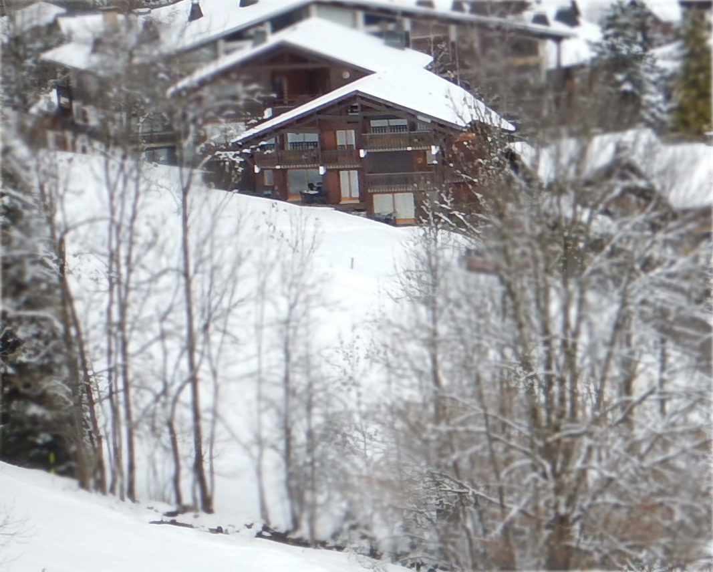
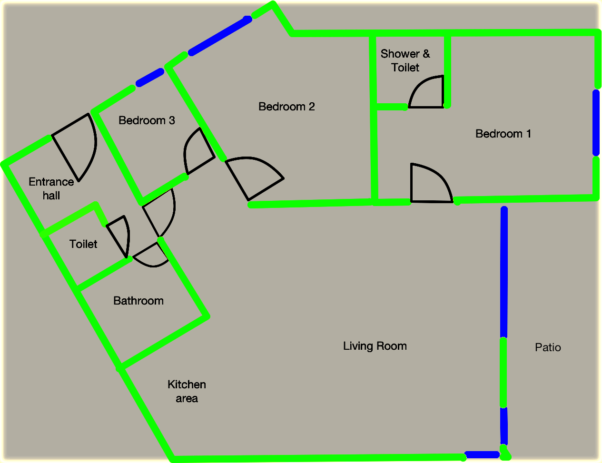
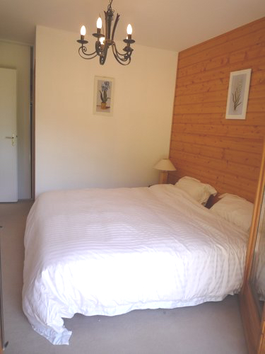
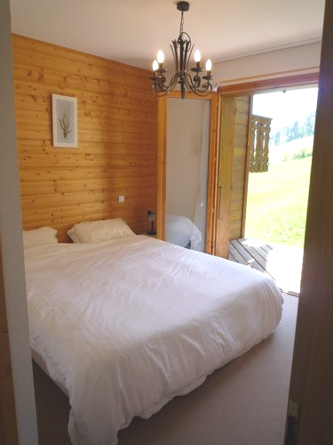

This apartment has already been rented out for the 2016/17 ski season but if you would like to enquire about availability after May 2017 please contact us.
The Property
Petit Pleney is a ground floor, three bedroom apartment perched at the bottom of Piste B. It opens out onto a large sun terrace and an even bigger garden. There's nothing to intrude upon a fantastic view of the Tete du Bostan. Piste B is one of the more popular routes back to Morzine after a day on the slopes. So it really is ski-in, and ski-out.
The floorplan is below with the blue lines showing the position of the windows.
Looking into the living room

As seen from the kitchen area

The kitchen area

The Master bedroom from the patio
and from the Living room
Bedroom number 2

Bedroom number 3 (Technically a "Cabine")

The patio in the summer

..and in the winter

The Location
Morzine'a just over an hour from Geneva airport and there are lots of transfer companies to get you there.
As you can see from the map below, Petit Pleney is about as central as you would want to be. It's a five minute walk into town yet a quiet and easy stroll away.
So..
If you'd like any more information on Petit Pleney please email me at Petit Pleney. I look forward to hearing from you.